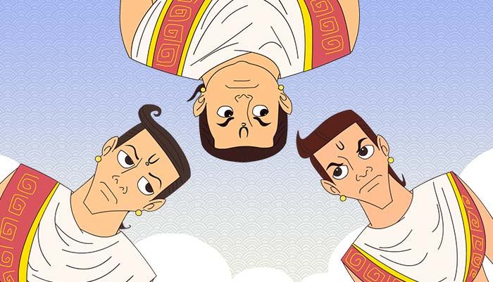

The three special Brahmins
Once upon a time there lived a rich brahmin by name of Vishnuswamin, who was performing a huge sacrificial rite. He had three sons who were each very fastidious about three specific things. The eldest was fastidious about food, the second about women and the third about beds. Vishsnuswamin wanted a tortoise for his sacrifice. So he sent his three sons to get one. They did find one but each of them refused to touch it and bring it back home, as each claimed to be as fastidious as the other.
Well then to decide, they approached the king with this matter of deciding who among them was the most fastidious. He decided to test them all. He invited the first one, to a very special feast prepared very exquisitely. But the first son, refused to touch the food claiming that the he smelt burnt corpses in the rice. On investigation, the king found that the grains of which the rice was cooked was from a field near a cremation ground. The king was impressed. He then decided to test the second son by sending a very very pretty and beautiful concubine, to him. But the second son sent her away saying that she was smelling like a goat. On investigation, the king found that she had been fed goat milk when she was a child. The king was impressed. Then he decided to test the third son, by letting him sleep in a bed with seven huge mattresses. In the middle of the night, the third son awoke with a lot of pain and a red mark on his shoulder. On verifying, it was found that there was a piece of hair in the bed below the seven mattresses. The king was impressed with all three and could not decide who was best but instead decided to use the skill of all three in his court and hired them. So Vishnuswamin could not complete his sacrifice.
Betaal stops and asks King Vikram asks this question: Who among the three is the most fastidious? Vikram replies with a lot of thought, "The third son, as he had definite evidence wit that red mark. The other two could have obtained information from elsewhere too."
As soon as Vikram had finished his answer, Betaal disappeared back to the tree.
|

|